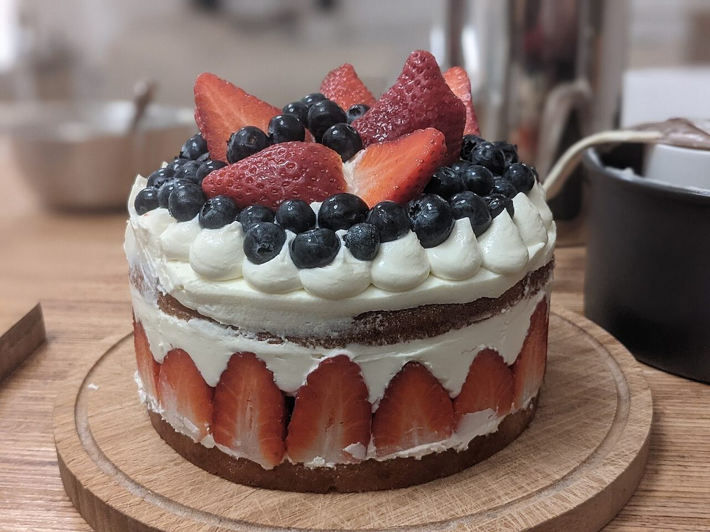

掲載写真はフリー素材のイメージで、店舗の実際の商品・店内ではありません。日本国外で撮影されたもの、撮影地が不明のものを含みます。

八頭町郡家のパティスリーカフェ|ひと皿ずつ、ひらく菓子帖
お知らせ
- 営業時間
- 準備中(お問い合わせください)
- 定休日
- 準備中(お問い合わせください)
ご来店前に、お電話でご確認いただくと安心です。




このサイトについて
このページは、お店の紹介を考えるための営業用サンプルです。掲載の写真や文章はイメージであり、実際の情報はお店にご確認ください。
まずはお電話で。